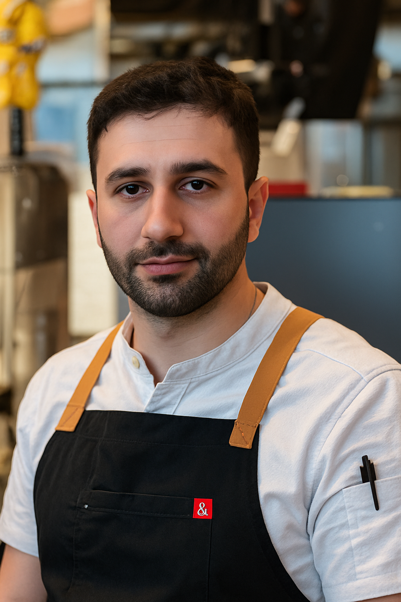
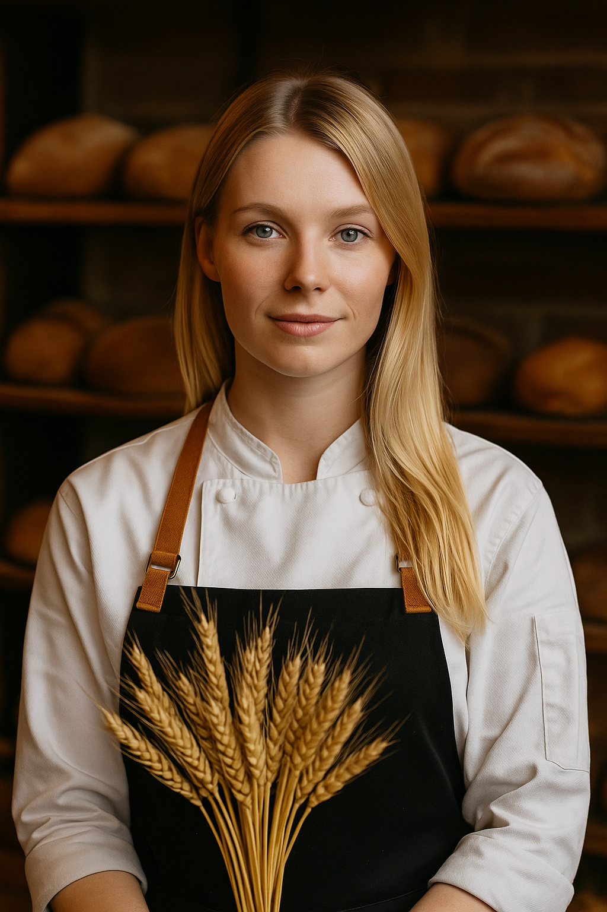
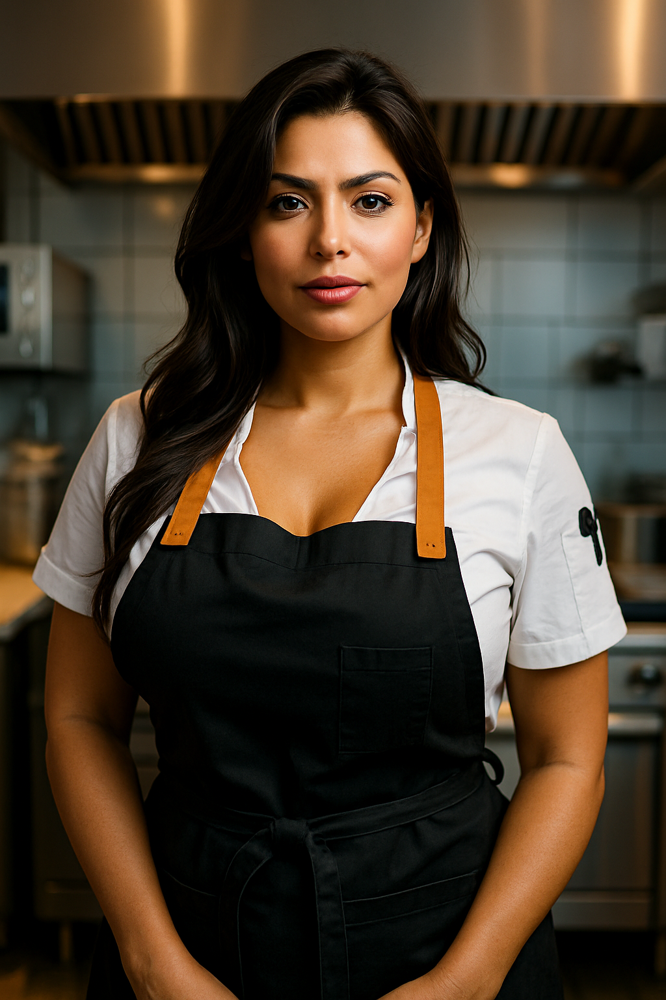

Meet the Chefs

Lilo Felix
Founder & Executive Chef. Passionate about local sourcing and crafting unforgettable culinary experiences rooted in tradition.

Chef Partner
Background in fine dining and hospitality. Specializes in sustainable menu design and kitchen leadership.

Chef Partner
Farm-to-table culinary expert with deep connections to regional producers and artisanal food systems.